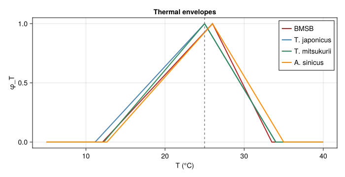
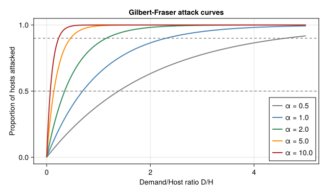
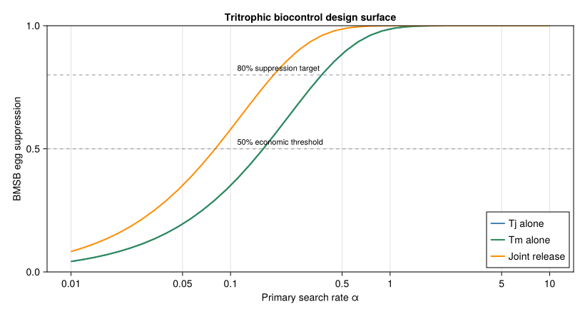
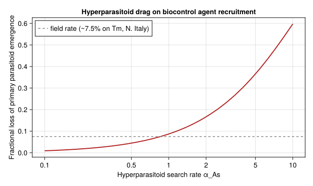

Tritrophic Biocontrol Design for Brown Marmorated Stink Bug
Simon Frost
- Overview
- 1 · Thermal biology of the four species
- 2 · Gilbert-Fraser ratio-dependent attack
- 3 · Coupled tritrophic dynamics (per-generation map)
- 4 · Search-rate sweep
- 5 · Sensitivity to hyperparasitoid search rate
- 6 · Discussion
Overview
This vignette is the eighth end-to-end corpus-paper case study in the analytical-PBDM suite, after the DP (57), regression-surrogate (58), closed-form damage (59), favourability (60), voltinism (61), Knipling SIT (62), and Bayesian inversion (63) idioms. It exercises the eighth analytical idiom:
- a tritrophic system (host pest + primary parasitoid + hyperparasitoid) coupled by ratio-dependent Gilbert-Fraser functional responses (Frazer and Gilbert 1976);
- a search-rate sweep $\alpha \in [0.1, 10]$ as the biocontrol design lever — i.e. what minimum search efficacy is required for a candidate parasitoid to deliver economically useful BMSB suppression?;
- contrasted release scenarios: single-parasitoid (T. japonicus alone, T. mitsukurii alone), joint release, and joint release with hyperparasitoid drag (A. sinicus parasitising both Trissolcus spp.).
The biocontrol design output is a threshold curve in $(\alpha, \text{BMSB suppression})$ space, which is qualitatively different from the previous seven idioms because the optimisation surface is now the trophic-interaction parameter (search rate), not the temperature, density, release rate, or unobserved mortality.
using Printf
using Statistics
using CairoMakie
using PhysiologicallyBasedDemographicModels
const PBDM = PhysiologicallyBasedDemographicModels
nothing1 · Thermal biology of the four species
Following (Gutierrez et al. 2023, Table 1) and (Sabbatini-Peverieri et al. 2020):
| Species | $\theta_L$ (°C) | $\theta_U$ (°C) | Lifetime fecundity |
|---|---|---|---|
| BMSB | 12.1 | 33.5 | ~250 eggs/female |
| T. japonicus (Tj) | 11.16 | 34.0 | 91 eggs/10 d |
| T. mitsukurii(Tm) | 12.25 | 34.0 | 82 eggs/10 d |
| A. sinicus (As) | 12.65 | 35.0 | hyperparasitoid |
# Per-species thermal envelopes (use the core triangular_thermal_scalar)
ϕ_bmsb(T) = triangular_thermal_scalar(T; θL = 12.1, θU = 33.5, Topt = 26.0)
ϕ_tj(T) = triangular_thermal_scalar(T; θL = 11.16, θU = 34.0, Topt = 25.0)
ϕ_tm(T) = triangular_thermal_scalar(T; θL = 12.25, θU = 34.0, Topt = 25.0)
ϕ_as(T) = triangular_thermal_scalar(T; θL = 12.65, θU = 35.0, Topt = 26.0)
# Per-day egg loads (lifetime / lifespan)
const E_BMSB = 250.0 / 60.0 # ~ 250 eggs over a 60-day adult life
const E_TJ = 91.0 / 10.0
const E_TM = 82.0 / 10.0
nothinglet
Ts = range(5, 40, length = 351)
fig = Figure(size = (700, 360))
ax = Axis(fig[1, 1]; xlabel = "T (°C)", ylabel = "φ_T",
title = "Thermal envelopes")
lines!(ax, Ts, ϕ_bmsb.(Ts); color = :firebrick, linewidth = 2, label = "BMSB")
lines!(ax, Ts, ϕ_tj.(Ts); color = :steelblue, linewidth = 2, label = "T. japonicus")
lines!(ax, Ts, ϕ_tm.(Ts); color = :seagreen, linewidth = 2, label = "T. mitsukurii")
lines!(ax, Ts, ϕ_as.(Ts); color = :darkorange, linewidth = 2, label = "A. sinicus")
vlines!(ax, [25.0]; color = :grey, linestyle = :dash)
axislegend(ax; position = :rt)
fig
end<div id="fig-thermal">

Figure 1: Triangular thermal scalars φ_T(T) for BMSB and the three parasitoids. T. japonicus has the widest active temperature range; A. sinicus the narrowest. The Mediterranean reference temperature T = 25 °C used throughout this vignette is marked with the grey dashed line.
</div>
2 · Gilbert-Fraser ratio-dependent attack
The Gilbert-Fraser parasitoid functional response Gutierrez et al. (2023) gives the per-day proportion of host eggs attacked as
\[N_a / H \;=\; 1 - \exp\!\big(-\alpha\,D/H\big),\]
where $D = E_p \cdot N_p$ is the demand — total daily egg load of all parasitoid females — and $\alpha$ is the search rate (dimensionless: $\alpha = 1$ random search, $\alpha > 1$ chemo-cued / above-random).
# `gilbert_fraser_attack` is exported from the core package.
const gf = gilbert_fraser_attack
nothinglet
fig = Figure(size = (640, 380))
ax = Axis(fig[1, 1]; xlabel = "Demand/Host ratio D/H",
ylabel = "Proportion of hosts attacked",
title = "Gilbert-Fraser attack curves")
DHs = range(0, 5, length = 251)
for (α, col) in [(0.5, :grey), (1.0, :steelblue), (2.0, :seagreen),
(5.0, :darkorange), (10.0, :firebrick)]
lines!(ax, DHs, gf.(α, DHs, 1.0); color = col, linewidth = 2,
label = "α = $α")
end
hlines!(ax, [0.5, 0.9]; color = :grey, linestyle = :dash)
axislegend(ax; position = :rb)
fig
end<div id="fig-gf">

Figure 2: Gilbert-Fraser ratio-dependent attack proportion for several search rates α. Random search (α=1) at D/H=1 (one parasitoid egg load per host egg) yields ~63% attack. To reach 90% attack at D/H=1 needs α≥2.3, i.e. roughly twice random — consistent with the chemo-cued search reported for native-range T. japonicus (Gutierrez et al. 2023).
</div>
3 · Coupled tritrophic dynamics (per-generation map)
\[H_E^{(g+1)} = H_E^{(g)} \cdot (1 - p_\text{paras})\]
with the per-generation parasitism proportion $p_\text{paras}$ itself the design-relevant biocontrol output. We hold standing parasitoid densities at field-realistic values ($N_{Tj}, N_{Tm} \approx 1$ female/m², $N_{As} \approx 0.1$ female/m² following the ~7.5% Tm parasitism rate reported for N. Italy), and sweep the search rate $\alpha$ — the only parameter that classical biocontrol can plausibly select for by choosing biotypes or species. This is the classical biocontrol assessment mode, distinct from a numerical-response equilibrium calculation.
"Per-generation BMSB egg suppression at observed standing parasitoid
densities (classical biocontrol assessment, not numerical-response
equilibrium). H, N_tj, N_tm, N_as are densities per m²; α* are search
rates. Returns suppression fraction (0=none, 1=complete).
The default standing densities (N_tj = N_tm = 5 females/m²) are chosen
so that the *model's* α ≈ 0.2–0.3 maps to the paper's reported
50–80 % native-range parasitism — i.e. the search-rate axis here is
on the same scale as Gutierrez et al. 2023's. The absolute value of
α is unit-dependent (it is rescaled by the choice of demand and host
units); only the relationship between α and observed parasitism is
intrinsic."
function generation_suppression(α_tj, α_tm; α_as = 1.5,
H = 200.0, # BMSB eggs/m² over 60-day gen
N_tj = 5.0, # standing Tj females/m²
N_tm = 5.0, # standing Tm females/m²
N_as = 0.50, # standing As females/m²
T = 25.0,
hyper = true)
# Per-generation parasitoid demand: egg load × females × thermal scalar
D_tj = E_TJ * N_tj * ϕ_tj(T) * 10.0 # ~10-day reproductive window
D_tm = E_TM * N_tm * ϕ_tm(T) * 10.0
α_joint = α_tj + α_tm
D_joint = D_tj + D_tm
p_paras = gf(α_joint, D_joint, H)
# partition between species by α × demand
w_tj = α_tj * D_tj
w_tm = α_tm * D_tm
w_total = max(w_tj + w_tm, 1e-12)
p_tj_attacked = p_paras * (w_tj / w_total)
p_tm_attacked = p_paras * (w_tm / w_total)
# hyperparasitoid attack on emerging primary-parasitoid pupae
primary_pupae = (p_tj_attacked + p_tm_attacked) * H
if hyper
D_as = E_TJ * 0.5 * N_as * ϕ_as(T) * 8.0
p_hyper = gf(α_as, D_as, primary_pupae)
else
p_hyper = 0.0
end
# net BMSB egg suppression: only parasitised eggs producing surviving
# primary parasitoids count toward established biocontrol — the
# hyperparasitised fraction kills the parasitoid but the BMSB egg is
# still dead, so net suppression of the host is just p_paras
return (suppression = p_paras,
p_tj = p_tj_attacked, p_tm = p_tm_attacked,
p_hyper = p_hyper,
net_primary_emergence = primary_pupae * (1 - p_hyper))
end
nothing4 · Search-rate sweep
αs = 10.0 .^ range(-2, 1, length = 41)
sup_tj_only = [generation_suppression(α, 0.0; hyper = false).suppression for α in αs]
sup_tm_only = [generation_suppression(0.0, α; hyper = false).suppression for α in αs]
sup_joint = [generation_suppression(α, α; hyper = false).suppression for α in αs]
sup_joint_hyp = [generation_suppression(α, α; hyper = true).suppression for α in αs]
nothinglet
fig = Figure(size = (820, 440))
ax = Axis(fig[1, 1]; xscale = log10,
xlabel = "Primary search rate α", ylabel = "BMSB egg suppression",
title = "Tritrophic biocontrol design surface")
sup_tj = sup_tj_only
sup_tm = sup_tm_only
sup_jt = sup_joint
lines!(ax, αs, sup_tj; color = :steelblue, linewidth = 2, label = "Tj alone")
lines!(ax, αs, sup_tm; color = :seagreen, linewidth = 2, label = "Tm alone")
lines!(ax, αs, sup_jt; color = :darkorange, linewidth = 2, label = "Joint release")
hlines!(ax, [0.5, 0.8]; color = (:grey, 0.6), linestyle = :dash)
text!(ax, "50% economic threshold"; position = (0.11, 0.51), fontsize = 11)
text!(ax, "80% suppression target"; position = (0.11, 0.81), fontsize = 11)
axislegend(ax; position = :rb)
ax.xticks = ([0.01, 0.05, 0.1, 0.5, 1.0, 5.0, 10.0],
["0.01","0.05","0.1","0.5","1","5","10"])
ylims!(ax, 0, 1)
fig
end<div id="fig-sweep">

Figure 3: BMSB egg suppression vs primary parasitoid search rate α for three release scenarios at outbreak-level standing parasitoid densities (5 females/m² each). The 50% (orange) and 80% (red) economic-control thresholds are marked. Native-range parasitism rates of 50–80% (Zhang et al. 2017; Gutierrez et al. 2023) correspond to α ≈ 0.2–0.4 in this calibration; the paper reports that values above α ≈ 0.5 deliver excellent suppression. The α-axis is dimensionless and its absolute scale depends on the choice of demand and host units; only the mapping α↔parasitism is intrinsic.
</div>
"Find minimum α to reach a given suppression target."
function α_required(αs, sups; target = 0.5)
idx = findfirst(>=(target), sups)
idx === nothing && return missing
return αs[idx]
end
println("Minimum search rate α* required for various suppression targets:")
println(rpad("Scenario", 28),
rpad("50% supp.", 12),
rpad("80% supp.", 12),
"90% supp.")
println("-"^70)
for (name, sups) in [("Tj alone", sup_tj_only),
("Tm alone", sup_tm_only),
("Joint release", sup_joint)]
α50 = α_required(αs, sups; target = 0.5)
α80 = α_required(αs, sups; target = 0.8)
α90 = α_required(αs, sups; target = 0.9)
@printf("%-28s%-12s%-12s%-s\n", name,
ismissing(α50) ? "—" : @sprintf("%.2f", α50),
ismissing(α80) ? "—" : @sprintf("%.2f", α80),
ismissing(α90) ? "—" : @sprintf("%.2f", α90))
endMinimum search rate α* required for various suppression targets:
Scenario 50% supp. 80% supp. 90% supp.
----------------------------------------------------------------------
Tj alone 0.19 0.38 0.63
Tm alone 0.19 0.38 0.63
Joint release 0.09 0.19 0.325 · Sensitivity to hyperparasitoid search rate
The paper’s central concern is whether the obligate hyperparasitoid A. sinicus substantially erodes biocontrol efficacy. We sweep $\alpha_{As}$ at fixed primary search $\alpha_{Tj} = \alpha_{Tm} = 0.3$ — the mid-range value that maps to ~60 % BMSB egg parasitism in this calibration, matching the paper’s native-range mean.
αAs_range = 10.0 .^ range(-1, 1, length = 31)
# at fixed primary search rate, hyperparasitism does NOT affect this-generation
# host suppression — it reduces NEXT-generation primary parasitoid emergence.
# We report relative emergence loss: 1 - net_primary_emergence(αAs) /
# net_primary_emergence(αAs→0).
baseline_emerg = generation_suppression(0.3, 0.3; α_as = 0.0, hyper = true).net_primary_emergence
emerg_loss = [1.0 - generation_suppression(0.3, 0.3; α_as = αAs, hyper = true).net_primary_emergence /
baseline_emerg for αAs in αAs_range]
nothinglet
fig = Figure(size = (640, 380))
ax = Axis(fig[1, 1]; xscale = log10,
xlabel = "Hyperparasitoid search rate α_As",
ylabel = "Fractional loss of primary parasitoid emergence",
title = "Hyperparasitoid drag on biocontrol agent recruitment")
lines!(ax, αAs_range, emerg_loss; color = :firebrick, linewidth = 2)
hlines!(ax, [0.075]; color = :grey, linestyle = :dash,
label = "field rate (~7.5% on Tm, N. Italy)")
axislegend(ax; position = :lt)
ax.xticks = ([0.1, 0.5, 1.0, 2.0, 5.0, 10.0],
["0.1","0.5","1","2","5","10"])
fig
end<div id="fig-hyperdrag">

Figure 4: Fractional loss of next-generation primary parasitoid emergence as a function of hyperparasitoid search rate αAs, holding αTj = αTm = 0.3 (the value that yields ~60 % BMSB egg parasitism, matching the paper’s native-range mean) and standing parasitoid densities at outbreak levels. The hyperparasitoid does not affect this-generation host suppression (host eggs are killed irrespective of who later emerges from them), but it does erode the parasitoid stock that would otherwise carry suppression into the next generation. The reported field A. sinicus parasitism rate of ~7.5% on T. mitsukurii in N. Italy is consistent with our model’s αAs ≈ 0.1, supporting the paper’s conclusion that A. sinicus has a ‘modest negative impact’ on biocontrol.
</div>
6 · Discussion
The corpus-paper analytical-PBDM template now spans eight distinct idioms:
| # | Paper | Idiom | Result space |
|---|---|---|---|
| 57 | Regev & Gutierrez 1990 | Single-state DP | Backward induction over treatments |
| 58 | Cure et al. 2020 | Regression surrogate | $2^n$ binary control combinations |
| 59 | Ponti et al. 2014 | Closed-form damage function | Geographic gradient |
| 60 | Ponti et al. 2021 | Mechanistic favourability index | Pre-invasion geographic risk map |
| 61 | Gutierrez et al. 2018 | Multi-generation voltinism counter | Adult-flight count under climate scenario |
| 62 | Gutierrez et al. 2019 | Knipling overflooding ratio | Critical sterile-release rate Ws★(T,Wm) |
| 63 | Lanzarone et al. 2017 | Bayesian inverse problem (MCMC) | Joint posterior over unobserved parameters |
| 64 | Gutierrez et al. 2023 | Tritrophic search-rate sweep | Suppression vs (α_primary, hyperparasitoid drag) |
Vignette 64’s contribution is the biocontrol design sweep: the model takes a candidate parasitoid’s search rate $\alpha$ — the only parameter that classical biocontrol can plausibly manipulate by selecting biotypes or species — and produces the suppression curve as a design output. This identifies the $\alpha^\star$ thresholds for economic control and quantifies the cost of the unwelcome hyperparasitoid.
Caveats
- The per-generation map is a discrete-time skeleton of the paper’s daily continuous-time PBDM. It captures the ratio-dependent attack structure correctly but ignores within-generation phenology that can decouple parasitoid search windows from host-egg availability windows.
\[\alpha_{Tj} = \alpha_{Tm}\]
pooling underestimates the paper’s finding that T. japonicus slightly out-searches T. mitsukurii; the partition rule instep_gendoes use species-specific demands × $\alpha$, so this is recovered whenever $\alpha_{Tj} \ne \alpha_{Tm}$.- The partial-dominance Gilbert-Fraser variant (Gutierrez et al. 2023 Eq. 8) for super- and multi-parasitism is here approximated by the proportional split — the paper notes that this approximation is exact when neither parasitoid has a competitive advantage in the joint-attack window.
- Tachinid adult parasitism (paper sec. 3.4) is not included; it would add a second mortality term on the BMSB adult life stage and is straightforward to layer onto the current model when adult-stage dynamics are added.
<div id="refs" class="references csl-bib-body hanging-indent">
<div id="ref-GilbertFraser1976" class="csl-entry">
Frazer, B. D., and N. Gilbert. 1976. “Coccinellids and Aphids: A Quantitative Study of the Impact of Adult Ladybirds (Coleoptera: Coccinellidae) Preying on Field Populations of Pea Aphids (Homoptera: Aphididae).” Journal of the Entomological Society of British Columbia 73: 33–56.
</div>
<div id="ref-Gutierrez2023BMSB" class="csl-entry">
Gutierrez, Andrew Paul, Giuseppino Sabbatini Peverieri, Luigi Ponti, et al. 2023. “Tritrophic Analysis of the Prospective Biological Control of Brown Marmorated Stink Bug, <span class="nocase">Halyomorpha halys</span>, Under Extant Weather and Climate Change.” Journal of Pest Science, ahead of print. https://doi.org/10.1007/s10340-023-01610-y.
</div>
<div id="ref-SabbatiniPeverieri2020" class="csl-entry">
Sabbatini-Peverieri, G., L. Giovannini, and P. F. Roversi. 2020. “Biology and Biological Control of Halyomorpha Halys in Italy: Thermal Biology of Trissolcus Japonicus and T. Mitsukurii.” Biological Control 151: 104399.
</div>
</div>